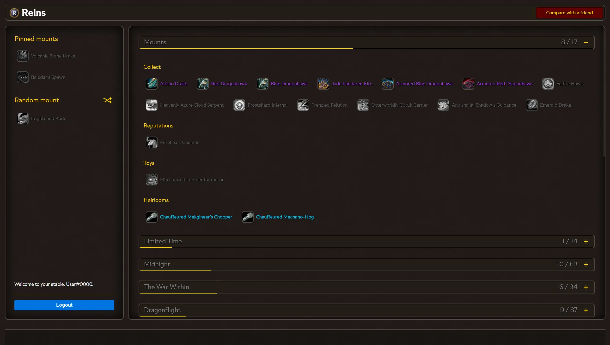
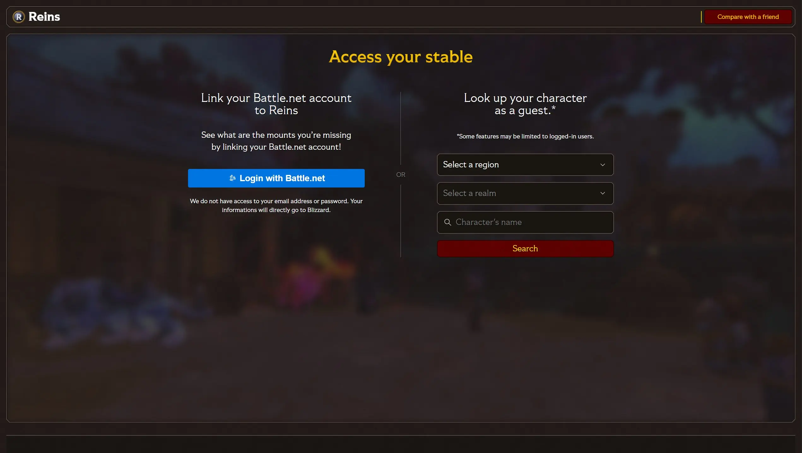
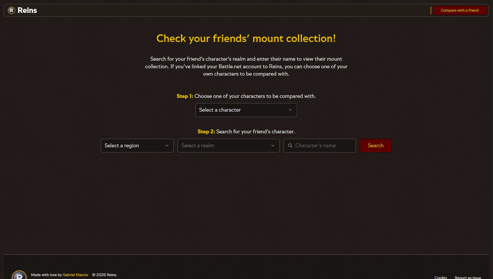
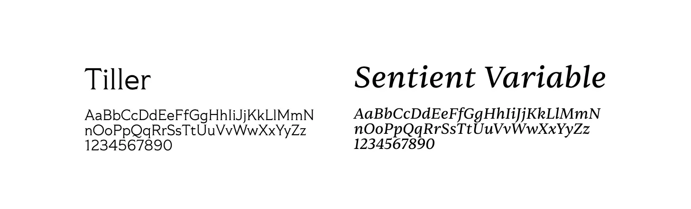
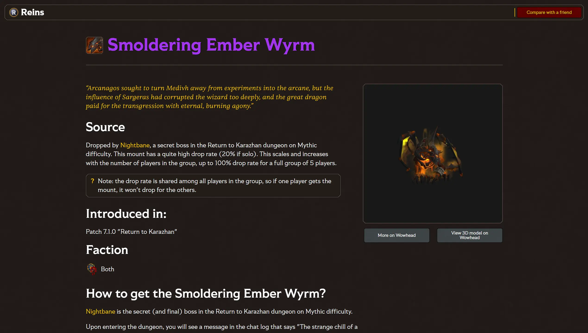
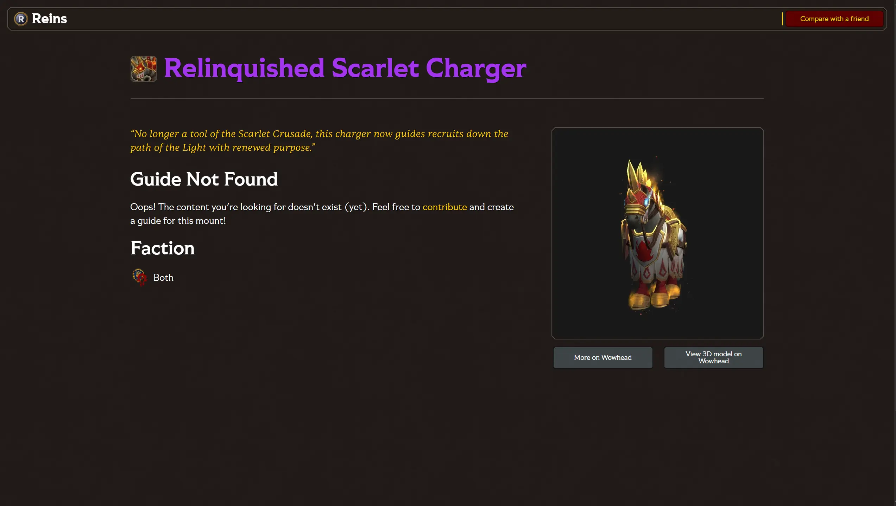

Reins 2026
Contexte
Ce projet a été réalisé dans le cadre de mon Travail de Fin d'Études en 3e année de bachelier au sein de la Haute École Albert Jacquard.
Choix du projet
Depuis quelques temps, je joue à World of Warcraft. Et sur ce jeu, j'ai découvert une manière de jouer qui me passionne : la chasse aux montures.
WoW est un MMORPG dans lequel les joueurs peuvent explorer le monde d'Azeroth à travers diverses activités. Cela va de raids pouvant aller jusqu'à 40 joueurs aux donjons à 5 joueurs, en passant par le "farming" de contenu plus ancien.
Dans cette chasse au contenu plus ancien, il y a une communauté active de joueurs cherchant à collectionner les montures les plus rares. Faisant partie de cette communauté, et en ayant déjà utilisé des outils déjà existants, j'ai décidé de créer un projet qui se rapprocherai de la vision que je voudrais d'un outil de collection de montures.
Direction artistique
Pour la direction artistique, j'ai voulu proposer quelque chose se rapprochant de la direction artistique déjà établie par Blizzard pour World of Warcraft. En effet, je suis quelqu'un qui apprécie l'immersion et beaucoup d'autres outils vont proposer une expérience plus détachée de cette direction artistique. Je voulais repartir sur ça, en modernisant certains aspects tout en reprenant des codes de design déjà établis en jeu. L'important pour moi était de garder un aspect fantasy.


Polices
Le choix de police était assez complexe, car je voulais trouver une police qui correspondait à l'atmosphère fantasy du jeu tout en étant lisible et moderne. Initialement, j'étais partit sur la Sentient Variable pour l'entièreté du site. Mais après réflexion, j'ai trouvé l'empattement trop important par rapport à la police déjà utilisée en jeu : la Friz Quadrata. Cette police étant payante, j'ai continué mes recherches jusqu'à trouver la Tiller, gratuite avec un abonnement Creative Cloud. Quant à la Sentient, je l'utilise tout de même dans sa version italique pour les citations présentes sur les montures, dans leur pages individuelles.


Développement
Pour le développement du site, s'agissant de mon Travail de Fin d'Études, j'ai décidé de m'orienter vers l'apprentissage d'un framework JavaScript moderne, comme React ou Vue.js, afin de créer une application web réactive. Mon choix s'est porté sur Vue.js en raison de sa courbe d'apprentissage relativement douce. Dans cette continuité, voulant m'initier à un framework fullstack, j'ai choisi d'utiliser Nuxt.js.
Une grosse partie des données affichées sur le site proviennent de l'API de World of Warcraft. La liste des montures classée par catégorie provient, quant à elle, d'un dépôt GitHub public qui est mis à jour régulièrement.
En ce qui concerne l'authentification, j'utilise OAuth 2.0 de Blizzard, ce qui me donne accès aux données relatives au compte de l'utilisateur, telles que les montures qu'il possède. Ce système offre également la possibilité de personnaliser l'expérience : les utilisateurs peuvent épingler des montures afin de construire leur propre « tableau de chasse » hebdomadaire.
En plus de pouvoir voir leur collection, les utilisateurs peuvent également la comparer avec d'autres personnes. Lors de cette comparaison, ils peuvent voir les différences entre leurs collections avec le montant différent dans chaque catégorie. Ils ont également la possibilité de partager le résultat en copiant le lien de la page.
Chaque monture dispose de sa page dédiée, où sont présentées les manières de l'obtenir dans le jeu. Ces pages sont rédigées manuellement car ce sont des informations qui ne peuvent pas être automatiquement récupérées. Si une monture n'a pas encore de guide, les utilisateurs peuvent en proposer un.
